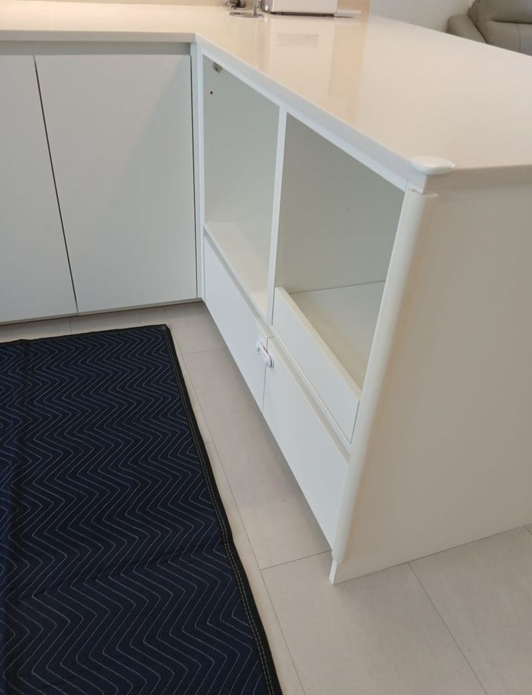
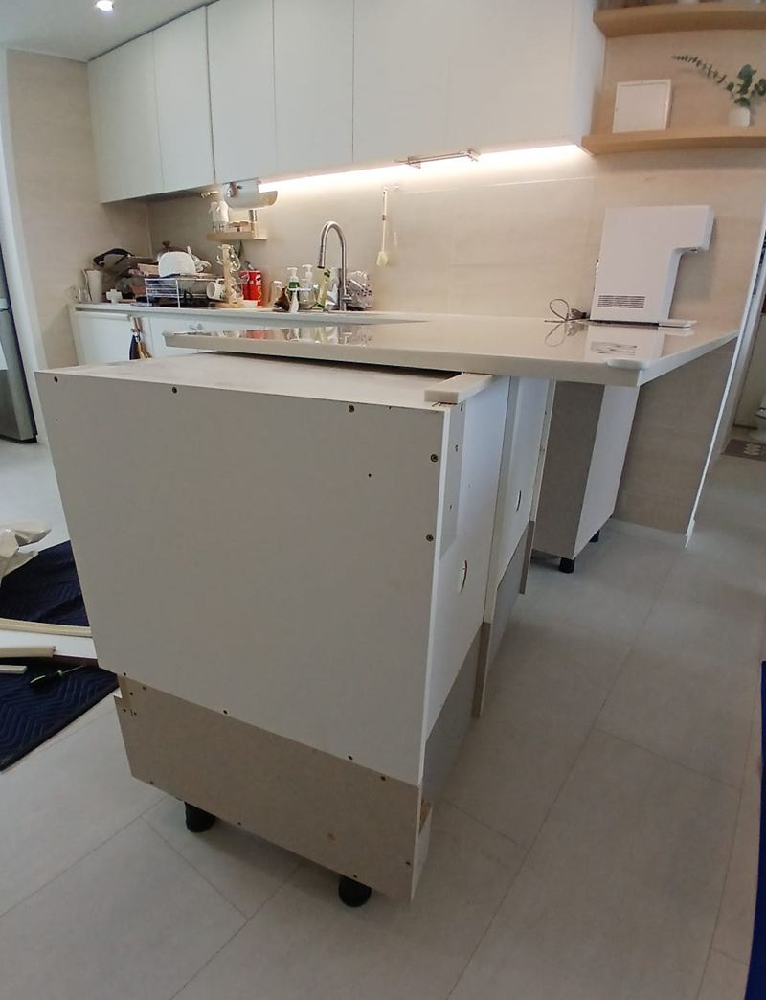
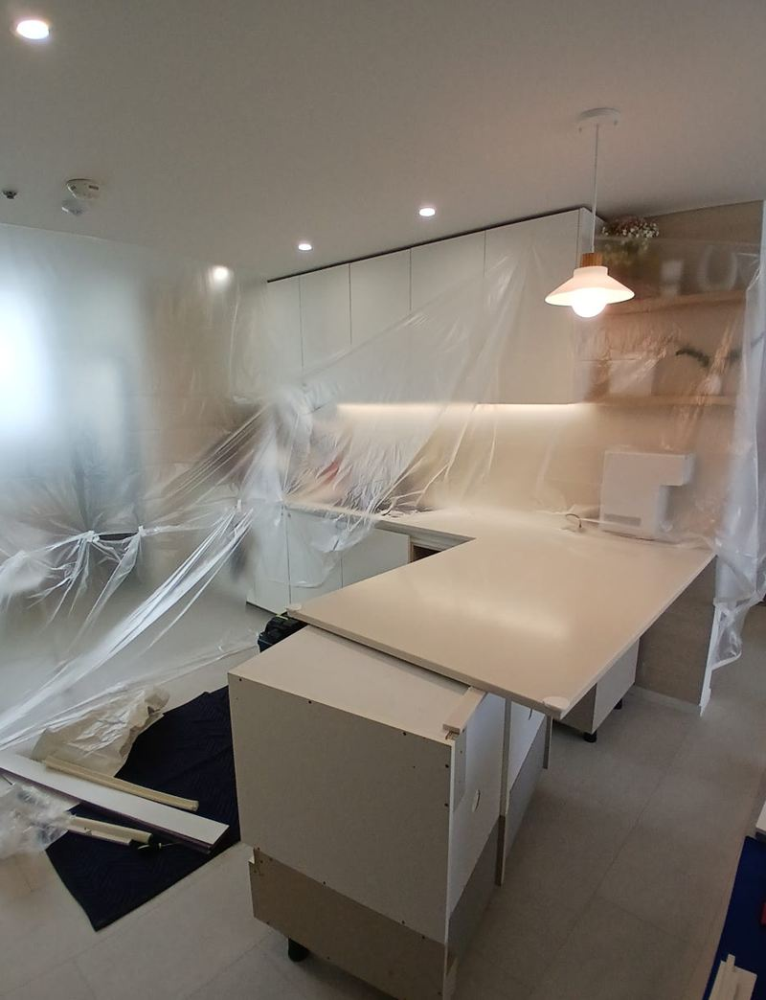
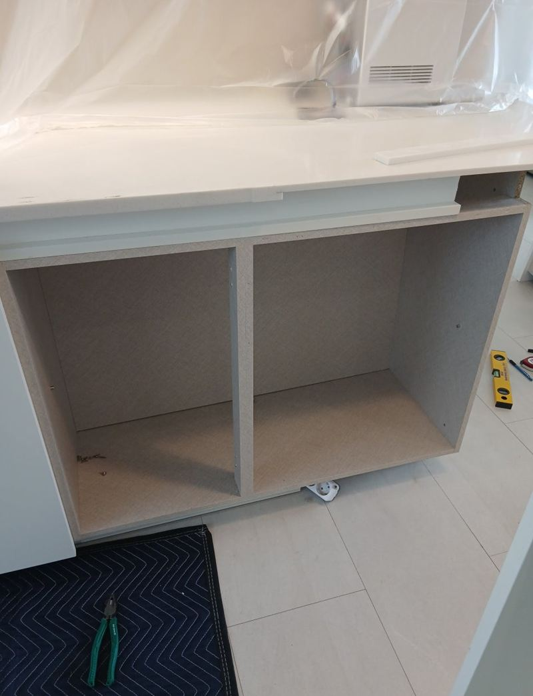
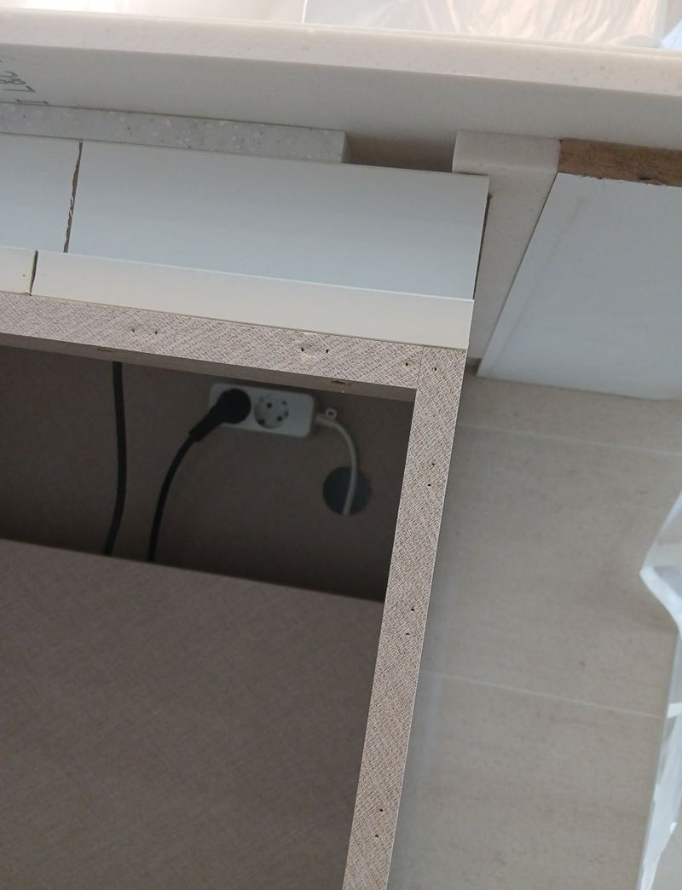
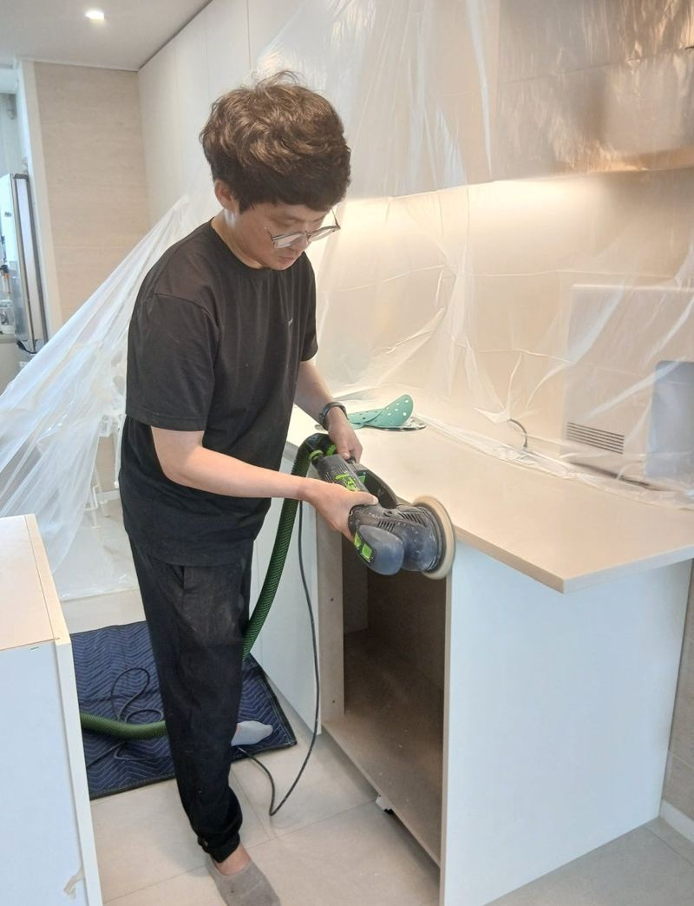
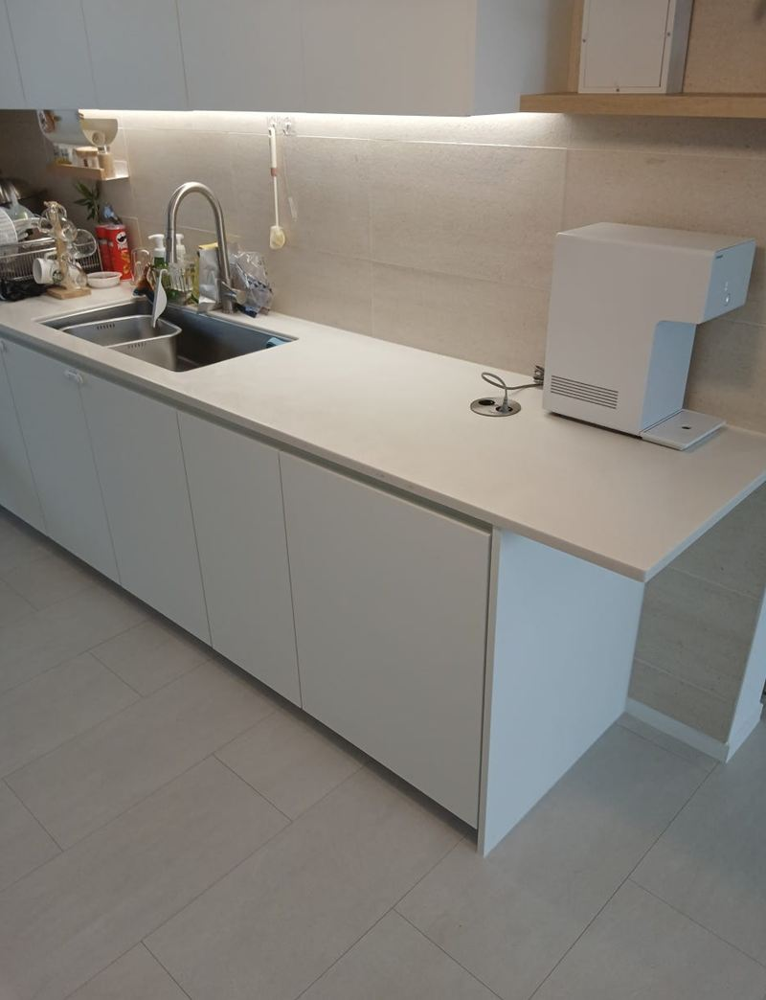

부천 아일랜드 식탁 리폼으로 공간 넓히는 방법

 리폼 전리폼 후
리폼 전리폼 후← 밀어서 전후 비교 →
거실 쪽으로 꺾여 나온 ㄱ자 아일랜드 식탁 때문에 주방이 막혀 보이고, 지나다닐 때마다 모서리에 걸린다는 집이었어요. 새로 짜기보다는 지금 있는 장과 대리석을 살려서 모양만 바꾸고 싶어 하셨어요. 튀어나온 부분을 떼어 내고 대리석을 잘라 일자로 만들어, 같은 주방이 훨씬 넓어 보이게 했어요.
| 현장 | 부천 범박동 아파트 주방 아일랜드 |
|---|---|
| 고민 | ㄱ자로 꺾인 부분이 동선을 막고 주방이 답답해 보임 |
| 한 일 | 꺾인 하부장 분해 → 대리석 절단·R가공 → 지지대 보강 → 접착·연마 |
| 살린 것 | 기존 대리석 상판과 하부장 자재로 새 문짝 제작 |
ㄱ자에서 I자로, 미리 정한 것들
대리석을 어디서 자를지, 하부장을 어떤 순서로 뗄지, 남는 장으로 문짝을 몇 개 만들지 실측하며 정했어요. 대리석은 한 번 자르면 되돌릴 수 없어서, 이 계획 단계가 마감 품질을 좌우해요.


대리석 자르기와 다듬기
-
먼지 막는 보양
대리석을 자르면 고운 먼지와 파편이 날려요. 주변 가구, 가전, 바닥을 비닐과 보호판으로 꼼꼼히 덮었어요.
-
절단선 따라 정밀 컷팅
전용 장비로 표시한 선을 따라 잘랐어요. 조금만 삐뚤어도 마감선이 어긋나 보여요.

-
모서리 R가공과 지지대
잘린 모서리는 둥글게 갈아 부딪혀도 덜 다치게 했어요. 짧아진 상판을 받칠 지지대도 새로 넣어 오래 써도 처지지 않게 했어요.


-
접착과 연마
열과 습기에 강한 본드로 대리석과 장을 붙이고, 절단면과 이음부를 연마해 매끈하게 마무리했어요.
남은 장으로 문짝 만들기
떼어 낸 하부장 일부를 살려 새 문짝을 만들었어요. 원래 주방 문짝과 같은 자재라 색과 결이 자연스럽게 이어져요. 경첩을 조정하며 여닫기를 확인하고, 먼지와 잔재를 모두 치워 마무리했어요.

아일랜드 리폼, 이런 집에서 많이 해요
- 주방이 좁아 보이고 동선이 막혀요꺾인 부분을 줄이면 거실과 주방이 이어져 보여요.
- 식탁을 따로 두고 싶어요아일랜드를 줄이고 그 자리에 식탁을 놓는 경우가 많아요.
- 상판은 멀쩡해서 버리기 아까워요이 현장처럼 대리석을 잘라 다시 쓰면 상판 값을 아낄 수 있어요.
아일랜드 식탁 리폼 질문
아일랜드에 싱크대나 쿡탑이 붙어 있어도 되나요?
배관과 전기가 지나가는 구조라면 옮길 수 있는 범위가 달라져요. 하부장 안쪽 사진을 보내 주세요.
대리석을 자르면 금이 가지 않나요?
전용 장비로 천천히 자르면 대부분 괜찮아요. 원래 실금이 있는 상판은 미리 확인하고 말씀드려요.
반대로 아일랜드를 늘릴 수도 있나요?
상판을 이어 붙이는 작업은 이음선이 보일 수 있어요. 원하는 모양을 알려주시면 가능한 방법을 같이 봐요.
작업 후 먼지가 많이 남나요?
보양을 하고 작업한 뒤 먼지와 잔재를 수거해요. 미세 먼지는 가볍게 닦아 주시면 돼요.
주방이 좁은데 아일랜드를 아예 없앨 수도 있나요?
철거하고 바닥을 정리하는 것도 가능해요. 바닥재가 아일랜드 아래에 깔려 있지 않은 경우가 많아 그 부분 마감을 같이 봐요.
리폼 기간 동안 주방을 못 쓰나요?
아일랜드 쪽만 작업해서 싱크대와 가스레인지는 대부분 쓰실 수 있어요.
다른 싱크대·수납장 현장
아일랜드 전체가 나오는 사진과 원하는 모양을 알려주세요.
전화 상담 010-4517-9872